GALLERY
Jelajahi keindahan Yogyakarta melalui galeri foto kami! Dari ikon-ikon sejarah hingga sudut kota yang ramai, kami sajikan
pesona istimewa yang hanya bisa Anda temukan di Kota Gudeg ini.
 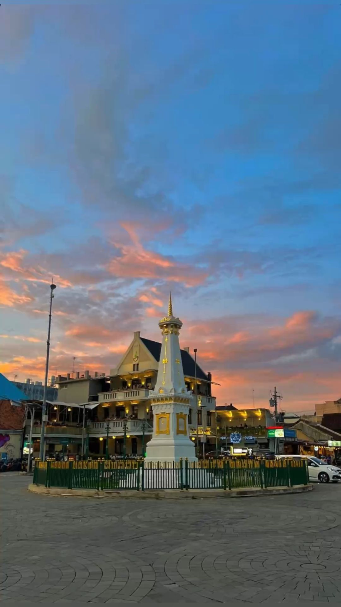
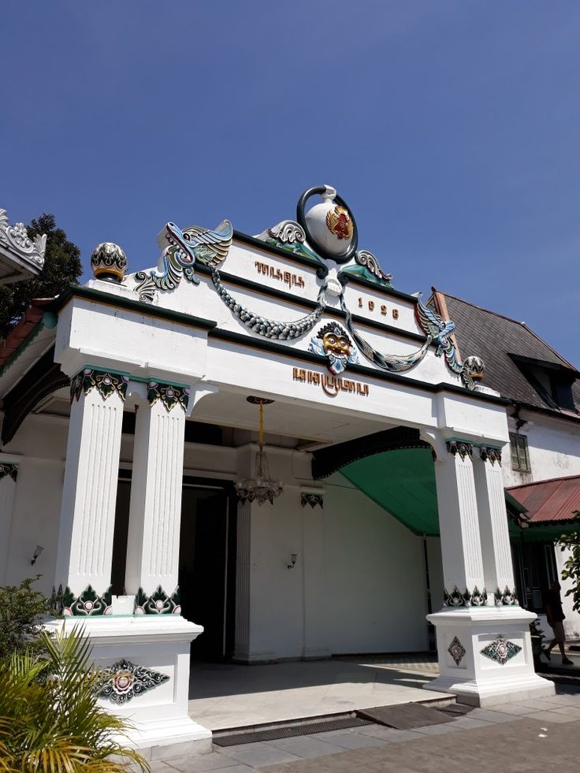
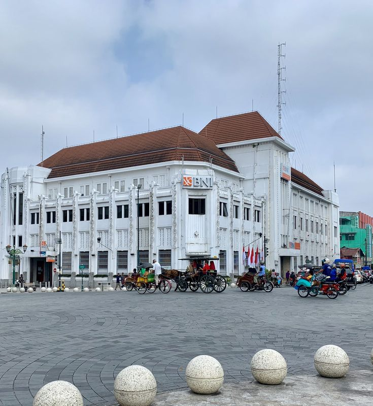
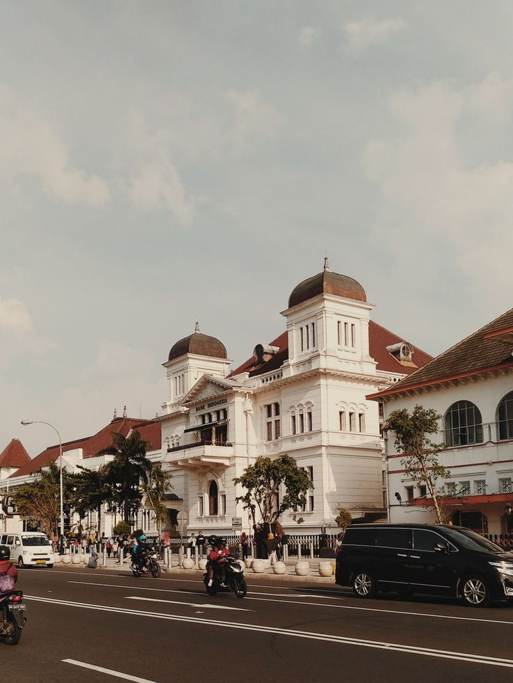
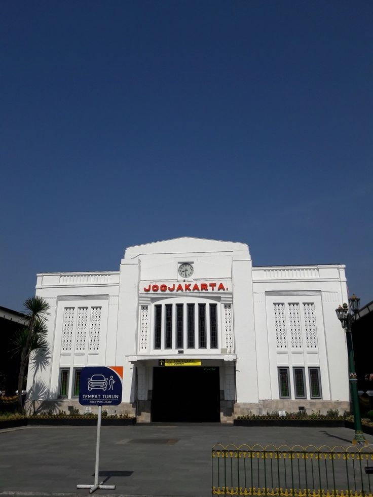
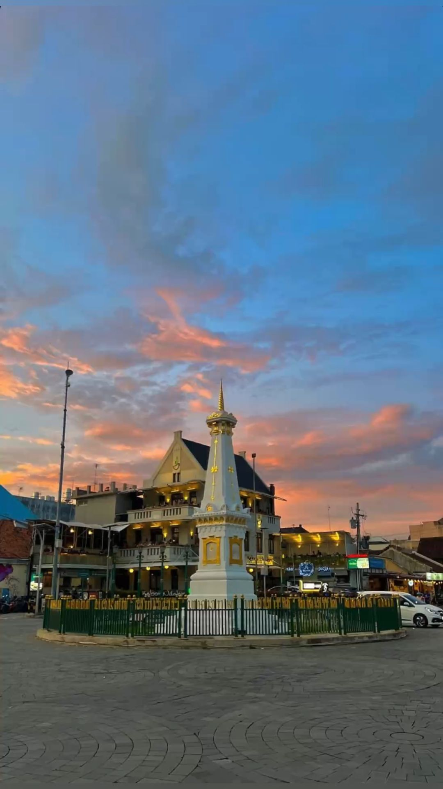
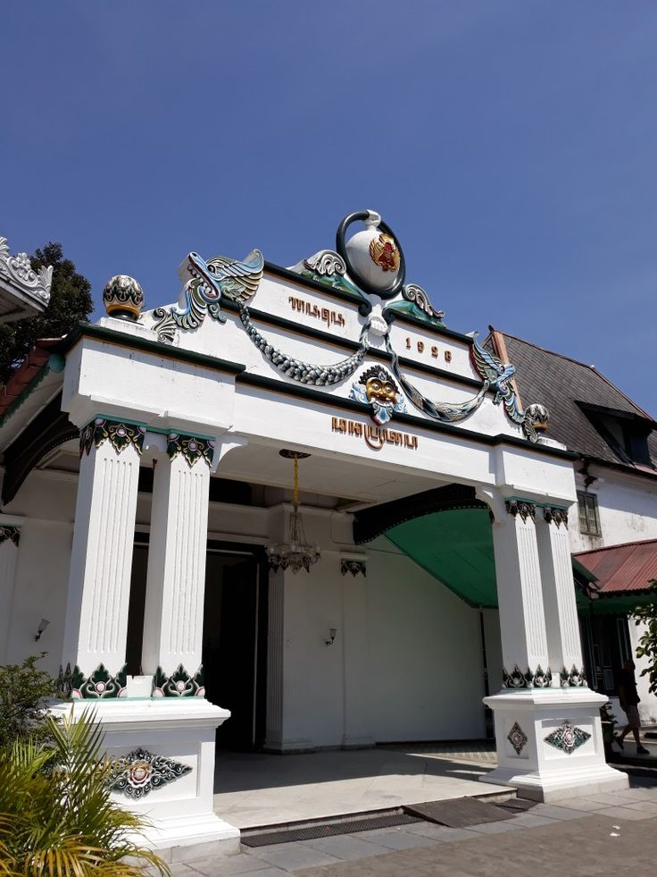
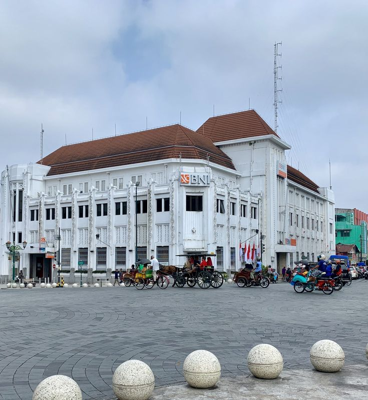
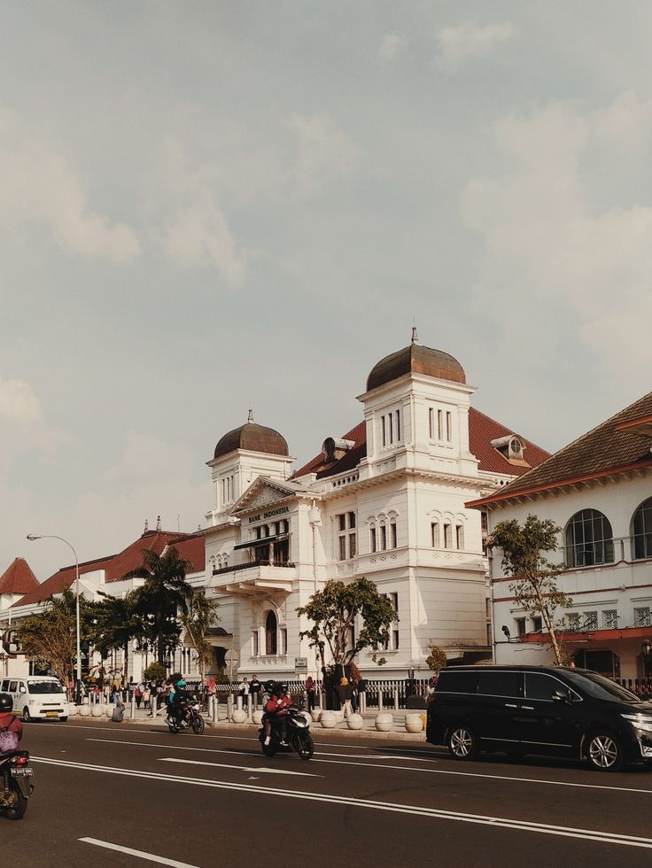
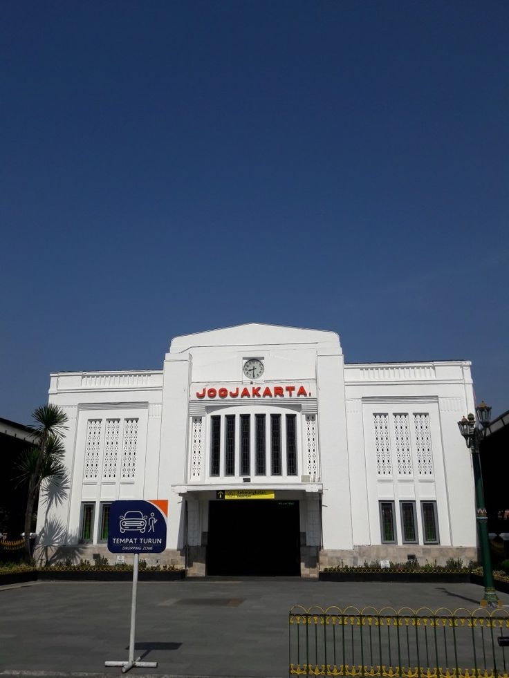
Setiap gambar bercerita tentang kekayaan budaya dan pesona tak terlupakan Yogyakarta. Nikmati suasana khas yang memadukan
tradisi, sejarah, dan keramahan yang selalu membuat rindu.
 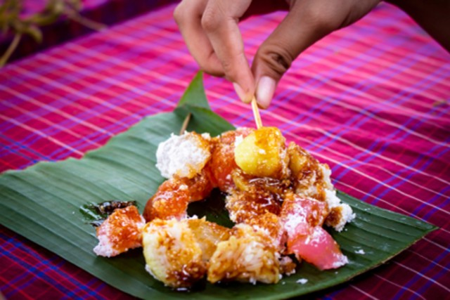
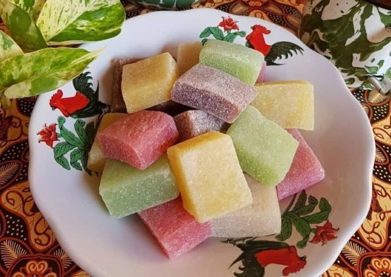
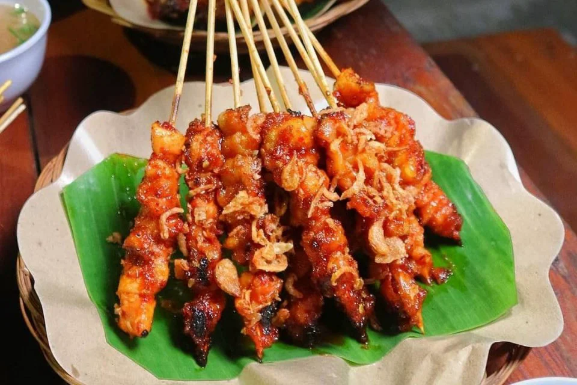
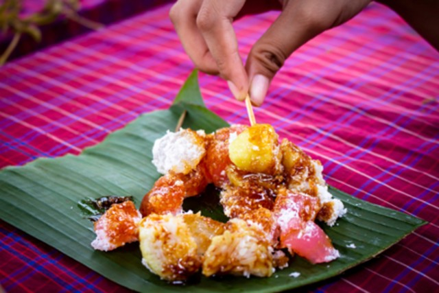
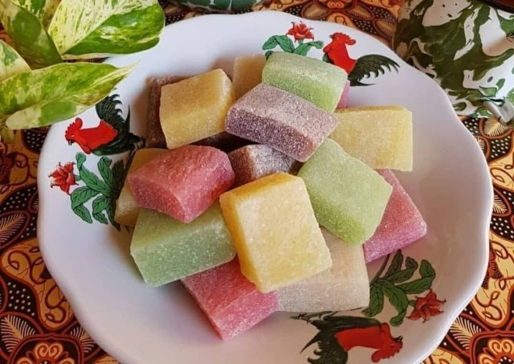
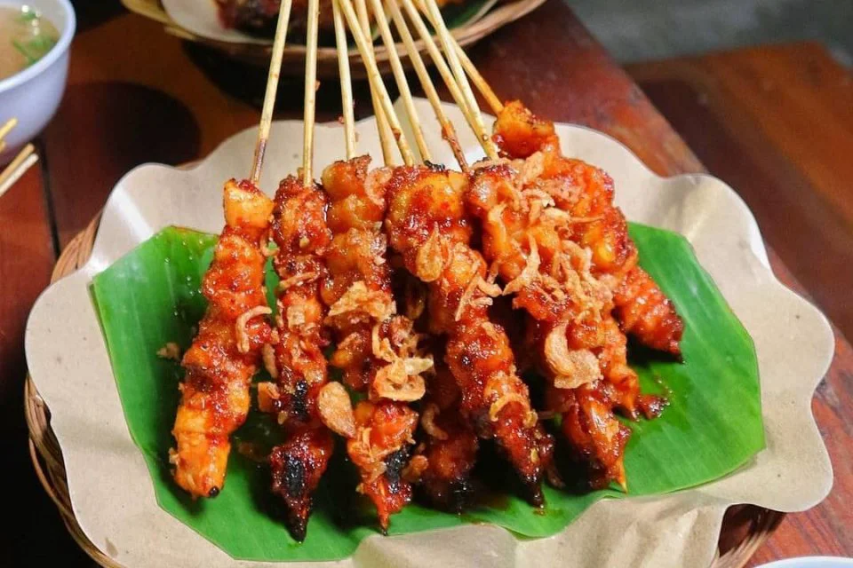